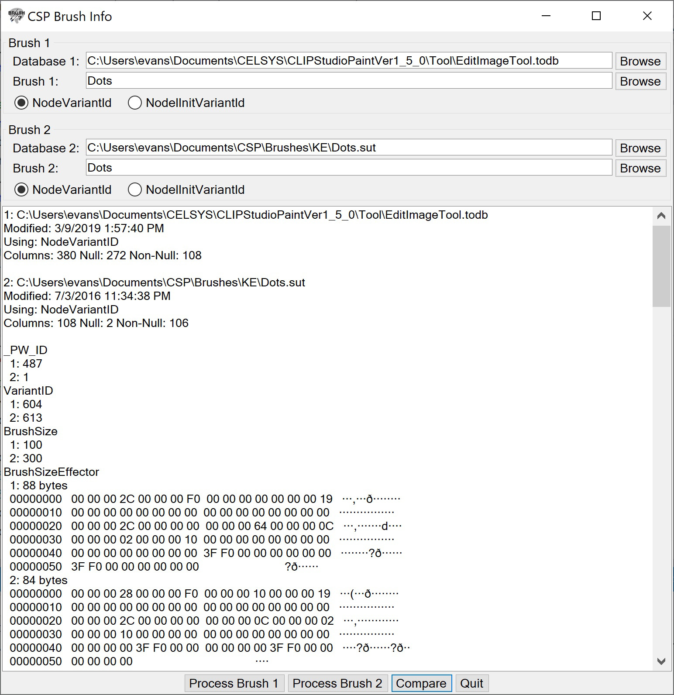

CSP Brush Info is designed to read a Clip Studio Paint brush configuration and display it in a readable form. It can also compare two brushes and show the differences. This can be useful for seeing the structure of the brush parameters and to easily compare the differences between two brushes. It is easier to compare brushes this way than by hunting through the brush properties dialog in Clip Studio Paint, but it is not as pretty. There is also some other information, such as the names of brush tip and textures, that is not in the Clip Stusio Paint interface.
Acknowledgements are at the end of the page.
The following information has been determined by observation on Windows 10 with the 1.8.8 English version of Clip Studio Paint. It may change with later versions and may be different for your system, but it should not be hard to find the equivalent locations.
Clip Studio Paint configuration in general uses SQLite databases. For a default installation these can be found in the working directory, Documents\CELSYS, and in the installation directory, Program Files\CELSYS. You may also have a Documents\CELSYS_EN directory from a previous installation. The Documents\CELSYS directory is the current state and is updated when Clip Studio Paint exits. If Clip Studio Paint crashes or is closed in an unusual way, the state will not be saved. There is also a database in the installation directory, presumably the default brushes. There are many SQLite files in these directories. The one of interest for brushes is EditImageTool.todb. Brush files with the SUT extension are also SQLite databases. CSP Brush Info can process all of these database files as well as SUT files:
These databases include tables for Node and Variant. The Node table has columns NodeName (the name of the brush or other tool), NodeVariantId (the variant corresponding to the current settings), and NodeInitVariantId (the variant corresponding to the default settings you get when restoring). The Node table has a column VariantId and many other columns representing the tool parameters. The brushes (as opposed to other tools) appear to be those where the NodeVariantId and NodeInitVariantId are non-zero, and the values of these can be used as the VariantId to find the brush parameters for the given NodeName in the Variant table. That is essentially what this program does.
The interface has a place to enter the names of two databases. You can then choose the brush from the available brushes in the database, and you can choose whether to use the NodeVariantId or the NodeInitVariantId. The buttons at the bottom process either the first or second brush, showing all the parameters, Compare, showing just the parameters that are different, or Quit.
Some of the database items are binary. Some of these, especially Effectors, have been partially decoded. The binary data as well as an interpretation of the data is in the output, including images for the Effectors. The interpretations are not based on information from Celsys and are not guaranteed to be correct. The binary data format for these items changes with the versions of Clip Studio Paint. The interpretation appears to work for some older versions but is more like to work for the recent ones.
This is a screen shot of the CSP Brush Info interface.

Show Tool Hierarchy
(There are submenus that determine which of the databases to use.) These will bring up a window showing all of your SubTools and how they are grouped into Tools, Tool Groups, and SubTools. Brushes are a SubTool, but there are other kinds of SubTools, and this shows all of them. For example, the Pen Tool typically has two groups, Pen and Marker. The G-pen is a SubTool in the Pen group, and the Milli pen is SubTool in the Marker group. This option will not be useful for a SUT file, only for the EditImageTool.todb database. This is a way to see all your brushes in one place in case you want to organize them or find where one is located. It also shows orphans (in the database but not in the hierarchy) and duplicate brush names. (Orphans and duplicates should not interfere with the operation of Clip Studio Paint.)
Save Info as RTF
Saves the output area on the main screen as RTF. You will prompted for the file name.
Quit
Exits the application.
Overview
Brings up a window with this HTML file. It works as a rudimentary browser with links and Back and Forward buttons.
About
Gives information about this application including the version.
There are context (right-click) menus on the output area on the main screen (which has Rich Text) and also on all the text entries and larger text areas. They have Cut, Copy, Paste, and other items that should be common or self explanatory.
If you are installing from a download, just unzip the files into a directory somewhere convenient. Then run it from there. If you are installing from a build, copy these files and directories from the bin/Release directory to a convenient directory.
To uninstall, just delete these files.
CSP Brush Info uses the NuGet package System.Data.SQLite. Clip Studio Paint is a product of Celsys.